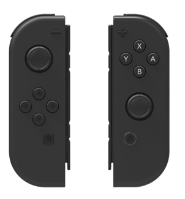
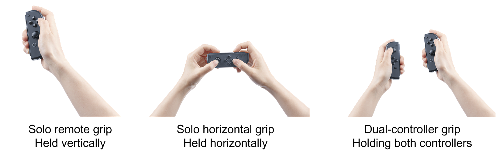
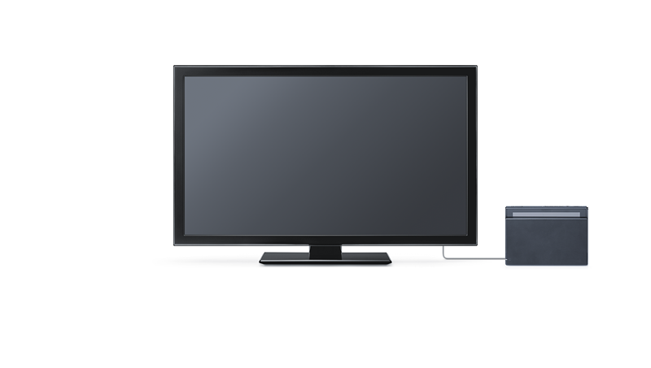
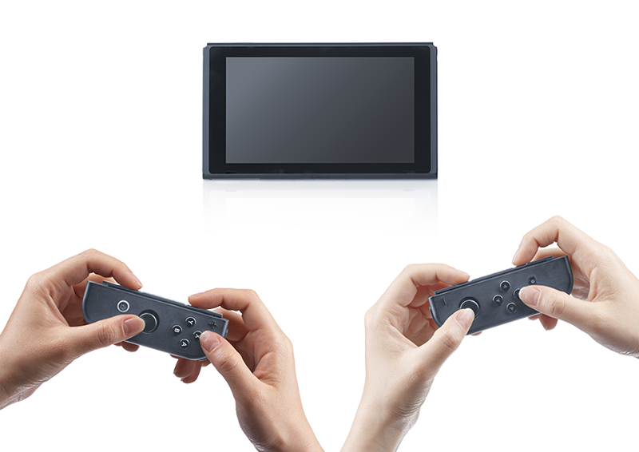
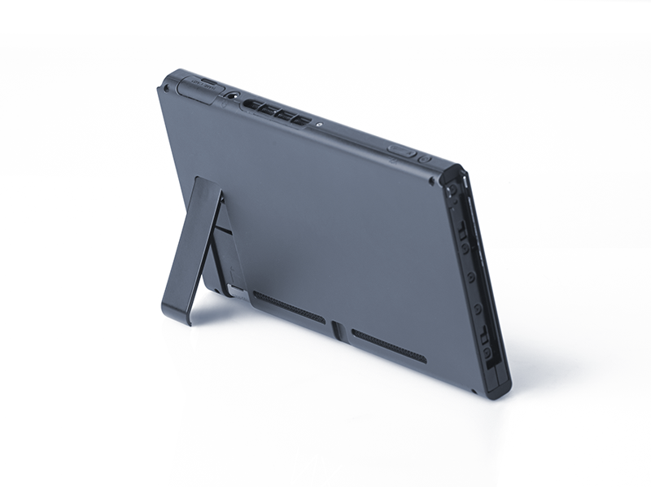
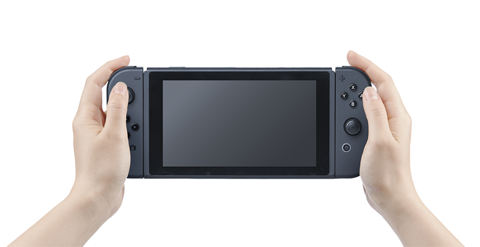

The JOY-CON is a pair of independent left and right wireless controllers. As shown in Figure 2-3 Ways to Hold the JOY-CON, there are several different ways to hold the JOY-CON, and this provides for a variety of possible styles of play.
Both the left and right JOY-CON controllers include an accelerometer and gyro sensor, allowing physical gameplay through hand and arm motions when held vertically. You can also enter different inputs with the left and right controllers when holding both controllers. Since the two controllers have the same combined number buttons as the Wii U GamePad, the pair can be held and used like a full-fledged multi-button controller for rich, solo gameplay. For this, the JOY-CON left and right controllers can be combined and used as a single controller by attaching them to the classic-grip accessory. The left and right controllers also can be held horizontally for gameplay, in which case each has a button configuration similar to the Super Nintendo Entertainment System controller. Finally, the JOY-CON controllers can be attached to the left and right sides of the main body and the NX played like a handheld game system.
However, when the JOY-CON controllers are connected to the console, they communicate through a wired connection instead of wirelessly.

Differently from the devices of any past Nintendo platforms, the JOY-CON incorporates IR sensors to detect hands and other shapes, and linear resonant actuators to generate a range of vibrations. For more information about the other components built into the JOY-CON, see 3.2 JOY-CON Hardware Configuration.
The IR sensor comprises an infrared LED and an infrared camera. This component is built only into the right JOY-CON controller.
Objects illuminated with the IR LED are captured with the IR camera to get an IR image. The hardware processes these IR images to recognize the movement and shape of objects. Because it uses infrared, this feature functions in dark locations as well. This enables the following features.
For more information, see IR Sensor Guide.
The linear resonant actuator is fundamentally different from the eccentric rotating mass installed in the Wii U GamePad and other devices. This component is built into both the left and right JOY-CON controllers.
The response is more sensitive than past vibration features and the vibration intensity and frequency can be changed to enable richer expression. Besides simply making the vibration stronger or weaker, it can represent the real qualities of objects, such as the rolling of a light ball or the flow of water. This allows us to use the vibration feature in combination with the images and sounds in scenes that would not have used the vibration feature in the past.
To use the vibration feature in an application, you can create the vibration for each scene, as was done in the past, or you can create vibration data in advance and play that data. Vibration data can be created using a tool included in the development environment which can, for example, convert sound data to vibration.
Taking full advantage of the richly expressive vibration of the linear resonant actuator will let applications offer more immersive experiences than ever before.
For more information, see the Linear Resonant Actuator Features Guide.
The NX can change play style depending on whether the system is sitting in the NX dock and whether the JOY-CON controllers are attached or detached. In this regard, the NX is a "console to go."
Below is an overview of each of the gameplay styles. For details and descriptions of each gameplay style and the compatibility of each gameplay style within applications, refer to the Play Style Guide.

Set in the NX dock, the NX can be played like a regular game console, using the TV as the display screen while using the JOY-CON to play the game.
 
If you remove the NX from the dock when the system is using TV mode, the images that were being shown on the TV will now be shown on the NX screen. The NX system comes with a stand, and you can set the NX in this stand on a desktop and use it as your screen while playing the game with the JOY-CON. Thanks to the NX, the experience of a game console, where groups of people play with controllers while watching the game on the same, single screen, is untethered from the TV and made portable.
When the NX is removed from the dock and moved around, it behaves differently in some ways. For more information, see Differences in Behavior When Removed From the NX Dock.

By attaching the JOY-CON controllers to the console, the NX can be played like a handheld game system. At this time, the JOY-CON controllers and the NX are connected through a wired connection.
If a user carries the NX around in handheld mode, that user is carrying around both JOY-CON controllers, so at any time the one system can be played by two people together in tabletop mode.
CONFIDENTIAL